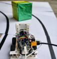

AUTONOMOUS DRIVING, PERCEPTION, PLANNING, CONTROL
Camera-based autonomous driving and obstacle avoidance
Our autonomous driving kit drove straight into any obstacle that covered a lane. I reframed the problem: not weak lane detection, but a system that could not tell lanes from obstacles. We used YOLO to detect both, then connected an A* avoidance path and PID control into one perception, planning and control loop.
- Period
- 2022.07–2022.08
- Program
- Chung-Ang University Da Vinci Creative Credit Program
- Role
- Team lead; perception, path planning and control algorithm design
- Stack
- Python, YOLO, A*, PID
01 / PROBLEM
Obstacles that hide the lane

Lane detection alone could not avoid obstacles
The first system drove by detecting lanes with a camera. When an obstacle covered a lane, the lane estimate became unstable and the vehicle hit the obstacle. I narrowed the cause to a structural problem: the system did not treat lanes and obstacles as different objects, so better lane detection alone would not fix it.

An obstacle covers the lane
Treat lanes and obstacles as separate objects
02 / IMPLEMENTATION
From detections to a path and steering
Lane detections became the reference path and obstacle detections became avoidance constraints, so both feed one driving pipeline.
Lane and obstacle detections both feed the driving decision. The center between the two lanes gives the reference path to follow.
A* plans a path that goes around the obstacle and returns to the reference path.
The lateral error from the path is converted into steering commands, so the vehicle follows the planned path.
03 / RESULT
Lower tracking error and verified obstacle avoidance
Mean lateral error
We measured how far the vehicle drifted sideways from the target path. After connecting perception, path planning and control, the mean lateral error dropped from 0.17 m to 0.05 m or less. In 10 trials with three randomly placed obstacles, the vehicle avoided every obstacle with zero collisions.
- Before
- 0.17 m
- After
- 0.05 m or less
10 trials, 0 collisionsObstacle avoidance confirmed with three randomly placed obstacles.
04 / OWNERSHIP
My contribution
- Problem definitionAnalyzed why obstacles caused lane detection to fail
- PerceptionSet up YOLO-based lane and obstacle detection
- PlanningA*-based avoidance path search
- ControlPID-based path tracking
As team lead, I designed the perception, planning and control algorithms and divided roles within the team.
05 / CONNECTION
From control to perception research
This project showed me that planning and control fail together when the perception input is unstable. That led me to the problem of observing and estimating vehicle state more reliably, and in graduate school I moved on to camera–LiDAR vehicle tracking and sensor fusion.
Related research → Vehicle tracking with reinforcement learning and camera–LiDAR fusion